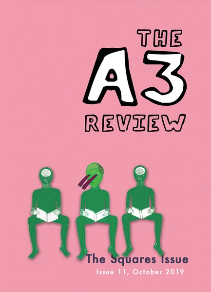
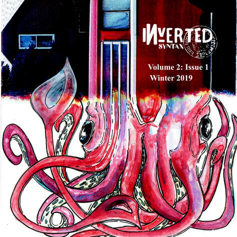
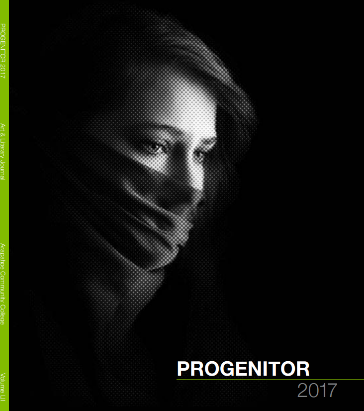
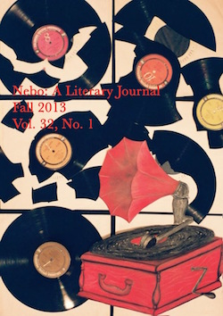
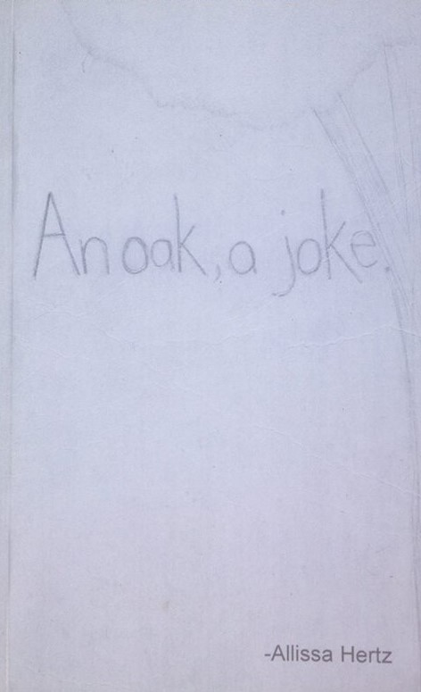
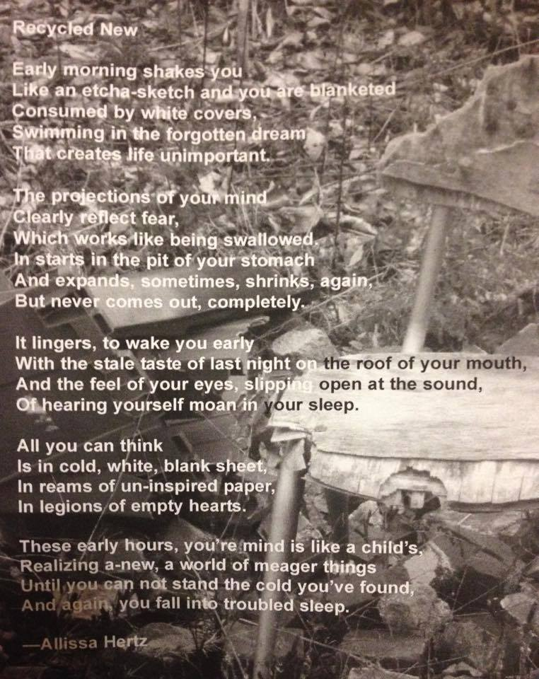

The New Year. In submission.
- This manuscript centers around a fractured lyric essay about my suicide attempt in 2012. It includes diary entries, school assignments, poetry, psych evaluations, childhood artwork, and monologues.
"Normal Poem” december Magazine, October 2019.
"Normal Poem” The A3 Review, The Square Issue, October 2019.

"Muddied Genre and Grass Roots: An Interview with Steven Dunn." Inverted Syntax, Mar. 2019.
"The Weird World of Language: An Interview with Eric Baus." Inverted Syntax, Feb. 2019.
"Inverted Syntax: Volume 2: Issue 1" Editorial Assistant. Winter 2018.

Click here to purchase.
"Try and Dream of Me, Ada" Penultimate Peanut Magazine, Sept. 2018.
"How Having a Writing Buddy Can Improve Your Writing Practice." Inverted Syntax, Sept. 2018.
"New Years" Progenitor. Arapahoe Community College, Spring 2017.

"Time” Literary Review-East, Jan. 2014.
“The Republic of Virtue: A Review” and “Something Magic About Poetry: An Interview” Nebo: A Literary Journal, Vol. 33, Arkansas Tech University, Fall 2014.
Nebo: A Literary Journal, Vol. 32, No.1. Editor. Arkansas Tech University, Fall 2013.

An Oak, A Joke. Self-published, paperback, Spring 2010.

“The Value of Giving Up; For What It’s Worth,” "Recycled New", "Infinite", and “Forcing Amnesia” Black Couch Literary Magazine, Spring 2010.

Honorable Mention in Tiny Spoon's 2019 Erasure Contest.
Winner of The A3 Review's April 2019 Contest.
First Place Winner in Tech’s 36th annual Creative Writing Contest. Arkansas Tech University. Russellville, AR, 2010.
Literary Magazine Writer of the Year Second Runner-Up, First Place in Literary Magazine Poetry and Excellent in literary Magazine Longer Poem. Arkansas Scholastic Press Association Convention. Rogers, AR, 2010.
First Runner-Up Arkansas State Finals of Poetry Out Loud. Arkansas Arts Council, 2010. Little Rock, AR, 2010.
Second Place Poetry Interpretation. R. David Ray Invitational Forensic Tournament. Monticello, AR, 2010.
Third Place for Poetry Interpretation. War Eagle Inaugural. Little Rock, AR, 2009.